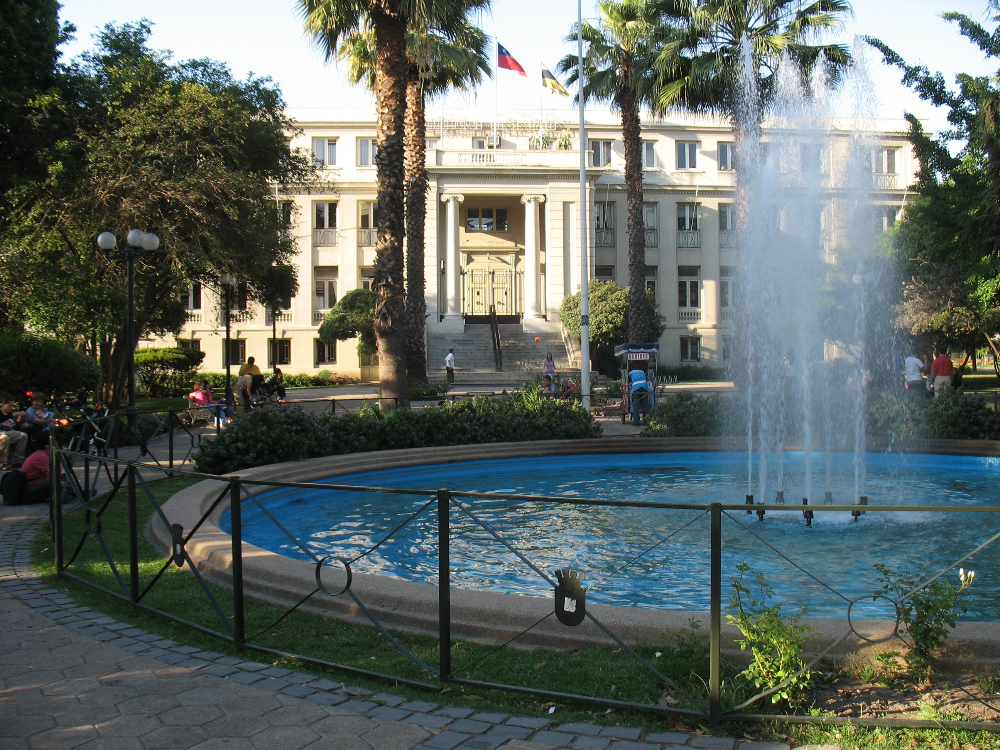
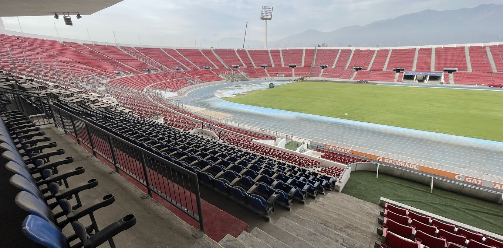

Plaza Ñuñoa
Alrededor de la arbolada Plaza Ñuñoa se pueden encontrar cafeterías al aire libre y bares animados, además de restaurantes chilenos, italianos y peruanos

Estadio Nacional
El Estadio Nacional Julio Martínez Prádanos es el principal recinto deportivo de Chile, ubicado en el Parque deportivo Estadio Nacional, un complejo deportivo multidisciplinario con una extensión de cerca de 64 hectáreas, en la comuna de Ñuñoa

Barrio Italia
El pintoresco Barrio Italia, que es una zona de edificios bajos con fachadas coloridas, está lleno de restaurantes italianos informales, pizzerías y heladerías con mesas en la acera a la sombra